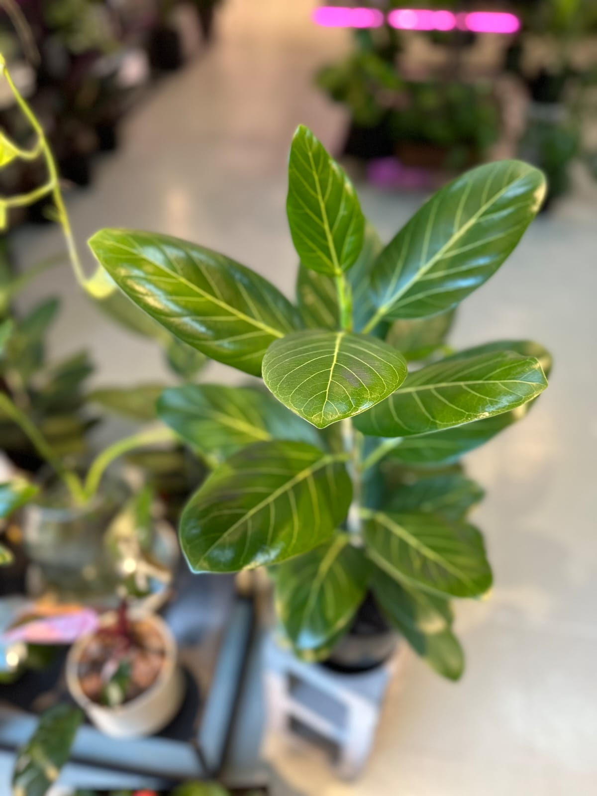
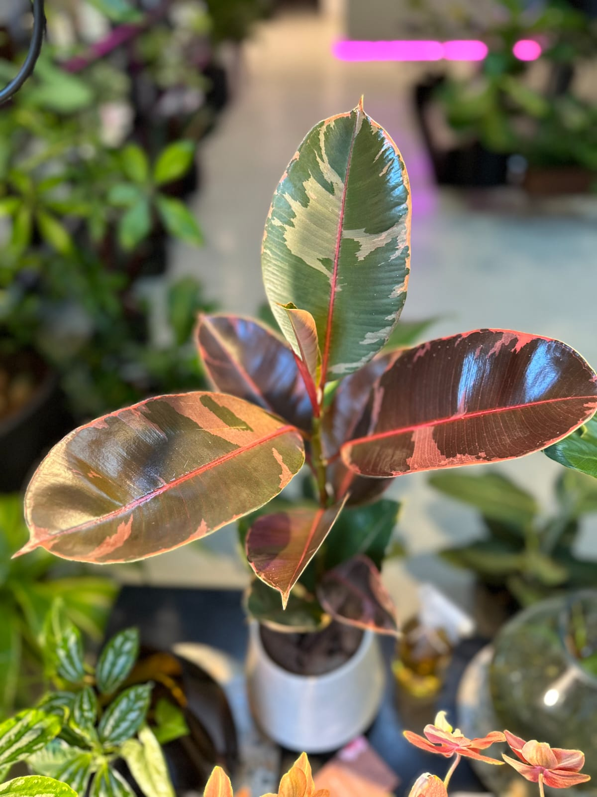

POTUS LEMON
Potus Limón (o Potus Lemon). Planta purificadora del aire, perfecta para principiantes. Es una de las variedades más divertidas y distintivas de la familia de los potus. Sus hojas color verde amarillento muy claras u brillantes no pasan desapercibidas, por eso también se la conoce como Potus Neón. Para mantener ese tono hay que poner la planta en puntos luminosos, por lo contrario el color se apagará y oscurecerá.

FITTONIA
Una planta pequeña y muy llamativa ideal para ese rincón que te faltaba iluminar. Hay que entenderla, es una planta tropical y como se vendrán dando cuenta, les gusta húmedo pero no encharcado. Siempre es preferible que la tierra se seque un poco y no que esté todo el tiempo mojada. Un plus, no es tóxica para animales.

PHILODENDRON
Realmente es una planta que se siente muy a gusto con nuestros climas ya que, como habrás visto en su nombre, es una especie originaria del este de Sudamerica: Brasil, Bolivia, Paraguay y Argentina. Si lo queremos tener en el interior de nuestras casas o departamentos, nos tenemos que asegurar de tener un espacio bien luminoso para su ubicación asegurándonos que en ningún momento el sol le pegue en forma directa a sus hojas. Si tenemos la posibilidad de tenerla directamente en suelo en un jardín, no va a dejar de crecer, siempre y cuando nos aseguremos de ubicarla en un lugar que esté siempre al reparo de los rayos del sol.

HEMIGRAPHIS
La Hemigraphis, originaria de Asia, es una planta exótica y vibrante que agrega color y alegría a cualquier espacio. Descubre cómo cuidar y disfrutar de esta fascinante planta en tu hogar. La Hemigraphis prefiere luz brillante indirecta. Colócala en un lugar donde reciba luz filtrada, como cerca de una ventana orientada al este o al oeste. Evita la luz solar directa intensa, ya que puede quemar las hojas.

AGLAONEMA
Es la planta perfecta para quienes quieran disfrutar de naturaleza tropical frondosa y llamativa. Más allá de su atractivo, los cuidados de la aglaonema hacen de ella la planta ideal para muchos hogares. A pesar de las apariencias, no es excesivamente exigente en lo que respecta a la luz. Un detalle que la convierte en una opción ideal para interiores que no disponen de buena luz solar. Es más: su resistencia es tal que podemos incluso cultivarla únicamente con luz artificial. La opción perfecta para quienes se ven forzados a renunciar a las plantas de interior por vivir en una casa poco iluminada.

FICUS ELASTICA RUBY
El Ficus Elastica es una de las plantas de interior apta para todos los públicos. Requiere muy poca atención, puede sobrevivir en sitios poco iluminados y para colmo ¡purifica el aire!. Originario de las selvas tropicales de Asia, el Ficus Elastica es una planta de cultivo exterior que se adapta a la perfección a espacios interiores. También puedes encontrarlo con varios nombres comunes: árbol de Caucho, árbol de goma, árbol de hoja grande… El Ficus Elastica Ruby es una variedad que posee también un tallo central del que salen unas grandes hojas ovaladas. Éstas, en lugar de ser de color verde oscuro, combinan el verde con zonas rosas cuando nacen, tornándose blancas con el paso del tiempo. Me encanta ubicada junto a otras plantas de hojas verdes (incluso con su “primo” el ficus lyrata).